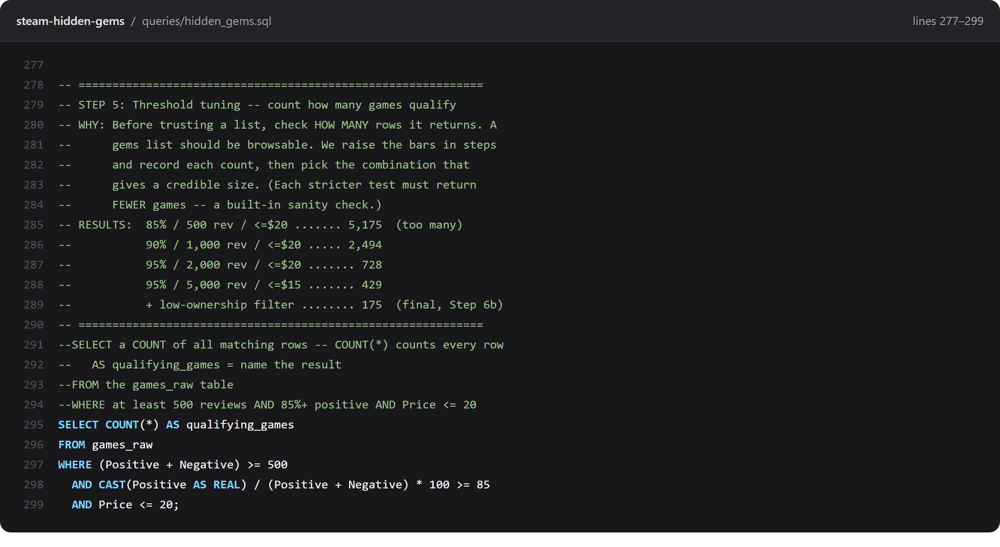
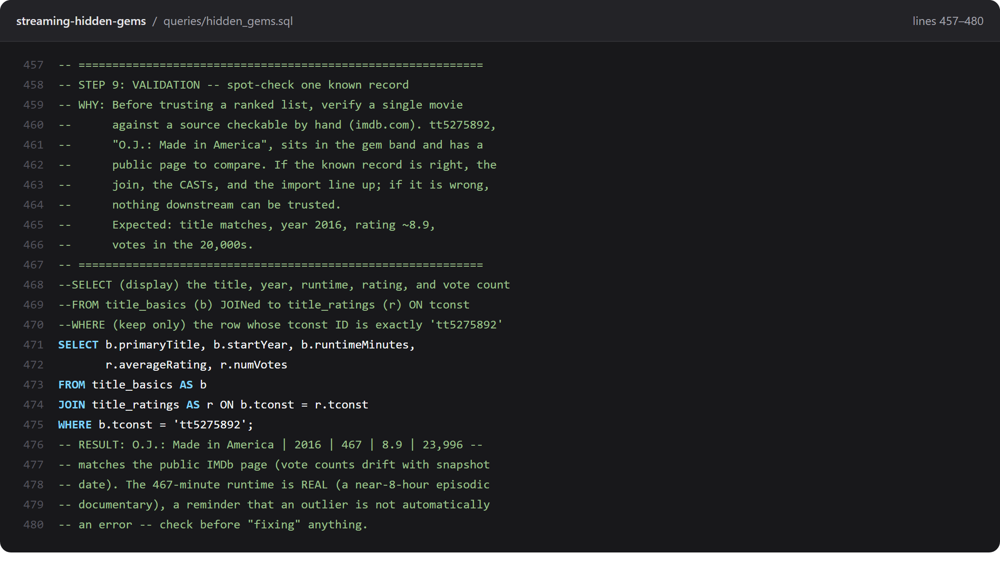
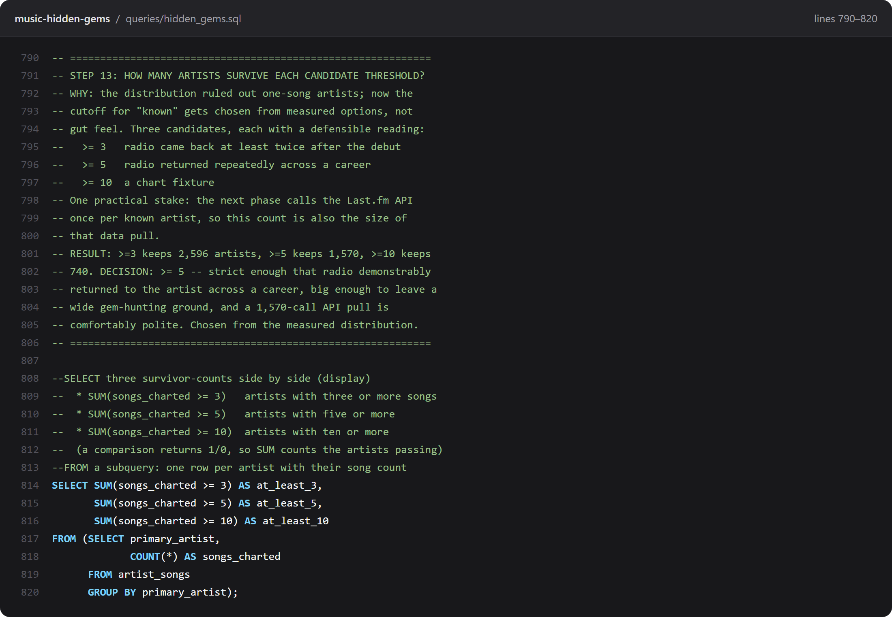

How to Comment SQL So It Teaches
This guide gives you a complete format for commenting SQL, one that teaches a reader instead of repeating the code back to them. It was built across three published portfolio projects, including one on a 125,000-row Steam dataset, and it is used word for word in those repositories, which you can read in full further down. The whole thing is here. Copy it, change it, make it yours.
If what you actually came for is the syntax, it is two marks and it takes ten seconds. -- hides the rest of one line. /* opens a block that stays hidden until */ closes it, across as many lines as you like. Both work the same in every major database.
-- this hides the rest of this line
/* this hides
everything until the closing mark */That is all of the syntax. The traps around it, including the two ways commenting out a line quietly breaks a query, are in how to comment in SQL. This page is about the harder question underneath it: what to put in the comment once you have one.
The format exists because of a specific limit. A comment can only be worth reading if it carries something the code does not already say. -- filter to active customers next to WHERE status = 'active' carries nothing. The one thing a reader cannot recover from the code is why anyone asked this question in the first place, and that is usually the part left out.
- Why the usual comments fail
- Part 1: the boxed WHY header
- Part 2: the read-out-loud block
- Part 3: sub-bullets for every calculation
- Part 4: the clean query
- The full before and after
- Standing conventions that keep it readable
- Why this works
- See it in use: three published projects
- Using it on your own portfolio project
- A cheat sheet
Why the usual comments fail
Here is what most people write, and what most AI assistants hand you when you ask for commented SQL. Read the comment on it, then read the code, and ask what the comment told you that the code did not. Hold your answer, because the gap you just noticed is the entire subject of this guide.
-- Get top rated games with at least 500 reviews
SELECT Name, Positive, Negative,
ROUND(CAST(Positive AS REAL) / (Positive + Negative) * 100, 1) AS pct_positive -- calc percentage
FROM games_raw
WHERE (Positive + Negative) >= 500 -- filter small samples
ORDER BY pct_positive DESC, Positive DESC
LIMIT 25;Three problems, and they compound:
- The comments restate the code. "filter small samples" next to a
WHEREclause that visibly filters small samples teaches nobody anything. - The interesting decision is invisible. Why 500 and not 50 or 5,000? Why rank on percentage rather than raw count? Those are the analyst judgments. They are the only part a reader cannot reconstruct, and they are the part left out.
- The inline comments crowd the code. Trailing comments push lines long, break alignment, and make the query harder to read than it would have been with no comments at all.
The format below inverts all three. The reasoning goes on top, the paraphrase goes on top, and the query stays clean.
Part 1: the boxed WHY header
Every query gets a full-width box containing a short step name and a WHY line. The WHY explains the analytical or business reason the question exists. It does not describe what the SQL does.
-- ============================================================
-- STEP 4: Each game's positive review PERCENTAGE (quality)
-- WHY: Raw counts favor popular games; a hidden gem is about how
-- WELL-LOVED a game is, not how many reviewed it. Percentage
-- measures quality independent of size. The 500-review floor
-- removes tiny-sample noise; the tiebreaker ranks more-
-- reviewed games above equally-rated smaller ones.
-- ============================================================The test for a good WHY: delete the query underneath it. Does the header still tell a reader what problem was being solved and what tradeoff was chosen? If yes, it is doing its job. If it collapses into "this selects some games," rewrite it.
WHERE clause. What they are actually trying to find out is whether you know why you wrote that particular one. The WHY header is where you show it.Part 2: the read-out-loud block
Directly under the header, one comment line per SQL clause, in the exact order the clauses appear in the query, each line starting with that clause keyword. A beginner should be able to read the block top to bottom and have it land as a sentence.
--SELECT Name, Positive, Negative, and a CALCULATED % positive column:
--FROM the games_raw table
--WHERE the game has at least 500 total reviews
--ORDER BY pct_positive DESC, then Positive DESC (tiebreaker)
--LIMIT the first 25 rowsTwo rules make this work, and both are easy to break by accident:
- Match the query's clause order exactly. If the query goes SELECT, FROM, WHERE, GROUP BY, HAVING, ORDER BY, LIMIT, the block goes in that order too. The reader is learning to map the paraphrase onto the code by position.
- Paraphrase, do not translate word for word. "WHERE the game has at least 500 total reviews" is a paraphrase. "WHERE Positive plus Negative is greater than or equal to 500" is a word-for-word translation. It teaches nothing, because it is the same sentence the code already said.
Notice the block uses -- with no space. That is deliberate. It visually separates the tight teaching block from the spaced-out box header above it. The two then read as distinct layers rather than one wall of comments.
Part 3: sub-bullets for every calculation
Any function or calculated column gets indented sub-bullets under its --SELECT line, one per piece, in the order a person reads them:
--SELECT Name, Positive, Negative, and a CALCULATED % positive column:
-- Positive / (Positive + Negative) * 100 = % of reviews that are positive
-- CAST(... AS REAL) = treat as a decimal so division keeps decimals
-- ROUND(..., 1) = round to 1 decimal place
-- AS pct_positive = name (alias) the new columnFor a nested calculation, explain it inside-out, innermost function first. Take ROUND(100.0 * SUM(CASE WHEN status = 'churned' THEN 1 ELSE 0 END) / COUNT(*), 2):
--SELECT the churn rate as a percentage:
-- CASE WHEN status = 'churned' THEN 1 ELSE 0 END = mark each churned row with a 1
-- SUM(...) = add the 1s, which counts the churned customers
-- / COUNT(*) = divide by every customer, giving a fraction
-- 100.0 * ... = turn the fraction into a percentage (the .0 forces decimal math)
-- ROUND(..., 2) = round to 2 decimal placesThat inside-out order matters. It is the order the database evaluates it and the order a person has to unpack it to understand it. Explaining from the outside in produces a description nobody can follow.
Part 4: the clean query
The SQL itself carries no comments at all. None. Every explanation lives in the block above.
SELECT Name, Positive, Negative,
ROUND(CAST(Positive AS REAL) / (Positive + Negative) * 100, 1) AS pct_positive
FROM games_raw
WHERE (Positive + Negative) >= 500
ORDER BY pct_positive DESC, Positive DESC
LIMIT 25;This is the rule people resist, and it is the one that makes the format work. Once the teaching lives in a fixed place above the query, the query becomes something you can read as code. You can copy it without stripping comments, and hand it to a colleague without apology. The separation is the feature.
The full before and after
Same query, same result set, both versions correct. The difference is what a reader walks away with.
Before
-- Get top rated games with at least 500 reviews
SELECT Name, Positive, Negative,
ROUND(CAST(Positive AS REAL) / (Positive + Negative) * 100, 1) AS pct_positive -- calc percentage
FROM games_raw
WHERE (Positive + Negative) >= 500 -- filter small samples
ORDER BY pct_positive DESC, Positive DESC
LIMIT 25;After
-- ============================================================
-- STEP 4: Each game's positive review PERCENTAGE (quality)
-- WHY: Raw counts favor popular games; a hidden gem is about how
-- WELL-LOVED a game is, not how many reviewed it. Percentage
-- measures quality independent of size. The 500-review floor
-- removes tiny-sample noise; the tiebreaker ranks more-
-- reviewed games above equally-rated smaller ones.
-- ============================================================
--SELECT Name, Positive, Negative, and a CALCULATED % positive column:
-- Positive / (Positive + Negative) * 100 = % of reviews that are positive
-- CAST(... AS REAL) = treat as a decimal so division keeps decimals
-- ROUND(..., 1) = round to 1 decimal place
-- AS pct_positive = name (alias) the new column
--FROM the games_raw table
--WHERE the game has at least 500 total reviews
--ORDER BY pct_positive DESC, then Positive DESC (tiebreaker)
--LIMIT the first 25 rows
SELECT Name, Positive, Negative,
ROUND(CAST(Positive AS REAL) / (Positive + Negative) * 100, 1) AS pct_positive
FROM games_raw
WHERE (Positive + Negative) >= 500
ORDER BY pct_positive DESC, Positive DESC
LIMIT 25;The WHY makes it a portfolio piece. The read-out-loud block makes it a lesson. The clean query makes it professional.
Standing conventions that keep it readable
The four parts are the format. These conventions are what stop a long .sql file from turning into a wall of repeated explanation.
Teach a function about three times, then stop
The first few times ROUND or CAST appears in a file, give it a sub-bullet. After that, drop it. A reader who has seen it three times has it, and re-explaining insults them. This fading is deliberate, and it is the single change that keeps long files from becoming exhausting.
Keep a keyword glossary box at the top of the file
Open each .sql file with a boxed "SQL FUNCTIONS & KEYWORDS USED" list, and add to it as new keywords appear. It gives a reader one place to look, and it lets you fade explanations in the body without stranding anyone.
Give big-picture sections their own boxes
Same box width as the query headers. Use it for the things that are not queries: the data-quality story, how the noise was filtered, scope and limitations, how results were validated. These are what turn a file of queries into a document with an argument.
Document the data's defects openly
If a column is 6% NULL, if a join match rate is 82%, if the snapshot is a year old, write it into a box rather than leaving it out. Stating limitations is not an admission of weakness. It is most of what separates an analyst from someone who ran a query. The Documenting Data Limitations guide goes deeper on this.
Keep the voice calm and beginner-facing
Everyday words. No jargon you have not introduced. Write for the version of you that did not know this yet, because that is who reads it, including future you at 11pm six months from now.
Why this works
The format is not just tidiness. Two well-established findings are doing the work.
The first is the self-explanation effect. Some learners explain worked examples to themselves as they read. They understand and transfer the material considerably better than learners who just read it (Chi, Bassok, Lewis, Reimann & Glaser, 1989, Cognitive Science 13(2), 145–182). The read-out-loud block is a self-explanation you can rehearse. When you write it yourself, you are forced to say what each clause does. The gaps in your understanding surface immediately, which is exactly when they are cheapest to fix.
The second is the generation effect. Material you produce yourself is remembered better than material you merely read (Slamecka & Graf, 1978, Journal of Experimental Psychology: Human Learning and Memory 4(6), 592–604). This is the argument for writing the block yourself on your own queries rather than only reading other people's. It is also why a good study drill on commented SQL is to hide the query, read only the comment block, and rebuild the SQL from it.
The WHY header is doing something different and simpler: it stores the decision. Six months later the code still shows what you did, but only the header remembers why you chose 500 rather than 50. That is the piece that is genuinely lost otherwise.
See it in use: three published projects
The format is not a proposal. It runs end to end in three public repositories, on three different datasets, and every query in them is commented this way. Each screenshot below is a real block from the file, and each links to the exact lines on GitHub so you can read the rest around it.
1. Steam Hidden Gems
About 125,000 games from the Steam catalog, narrowed to the 175 that are highly rated and still small. Two files: hidden_gems.sql is the 8-step hunt, and hidden_gems_joins.sql adds 10 more steps on joins, aggregation and views. The written rules for the format live in that repo too, as COMMENT_STYLE.md.

2. Streaming Hidden Gems
The same hunt run on IMDb's full catalog, 751,802 movies down to 581 gems, joining title_basics to title_ratings. Eleven steps in hidden_gems.sql. The results are browsable at the live list.

3. Music Hidden Gems
The biggest of the three, 48 steps over 68 years of Billboard Hot 100 history joined to Last.fm listening data. hidden_gems.sql runs past 2,000 lines and is still readable top to bottom, which is the real test of the fading rule. The top 500 are at the live list.

One thing worth noticing across all three: the query bodies are short. Most are under ten lines. The comments are long because the thinking is the hard part, and the thinking is what a reader came for.
Using it on your own portfolio project
Bring a query of your own to mind, one you wrote more than a month ago. Can you say why you chose that filter, or that threshold? If the reason is gone, that is what a WHY header would have kept, and it is why this is worth the afternoon.
Retrofitting a whole project at once is miserable and you will abandon it. Do this instead:
- Start with the headers only. Go through your existing
.sqlfile and add just the boxed WHY above each query. Nothing else. This alone captures the reasoning you will otherwise forget, and it takes an afternoon. - Add read-out-loud blocks to the three hardest queries. Not all of them. The ones with a window function, a nested CASE, or a join you had to think about. Those are where a reader gets lost.
- Strip the inline comments as you go. Every time you add a block above a query, delete the trailing comments inside it. The query gets shorter and better looking immediately, which is the reward that keeps you going.
- Add the glossary box last, once you can see which keywords actually recur.
If you are starting a project rather than fixing one, write the WHY header before you write the query. Committing to why you are asking the question tends to change the question, usually for the better.
A cheat sheet
| Part | What goes in it | The test |
|---|---|---|
| Boxed WHY header | Step name, plus the analytical reason the question exists | Delete the query. Does the header still explain the problem? |
| Read-out-loud block | One line per clause, in the query's clause order | Can a beginner read it top to bottom as a sentence? |
| Sub-bullets | Every function or calculation, explained inside-out | Is each piece named and given a purpose? |
| The query | Nothing but SQL | Zero comment characters inside the query body. |
| Glossary box | Every keyword used in the file | Can a reader look up anything faded from the body? |
| Limitations box | NULL rates, match rates, snapshot dates, scope | Would a skeptic find a surprise you did not mention? |
The SQL Kit teaches the core of analyst SQL with worked examples, live JOIN and Aggregation labs you run in the browser, flash cards, and a mock exam. Nothing to install, no account needed.
Open the SQL Kit →SQL for Analysts is 239 pages, every query read line by line in everyday words, with practice questions that print the answer and the reason it is right.
SQL for Analysts, $19 →SQL for Analysts is my own book, so buying it pays me directly. Nothing else on this page is sponsored or paid for, and the commenting format above is yours to keep either way.
Want this format enforced instead of just described? The SQL Comment System is a $29 agent plus a 12-point scoring rubric that checks every query against it.
References
- Chi, M. T. H., Bassok, M., Lewis, M. W., Reimann, P., & Glaser, R. (1989). Self-explanations: How students study and use examples in learning to solve problems. Cognitive Science, 13(2), 145–182.
- Slamecka, N. J., & Graf, P. (1978). The generation effect: Delineation of a phenomenon. Journal of Experimental Psychology: Human Learning and Memory, 4(6), 592–604.